| 단계 | 산출물 | 일반 (모바일 APP·Web 등) | 응용 소프트웨어 (빅데이터·인공지능 등) | 응용 하드웨어 (IoT·로봇 등) | 본 설계서 |
|---|---|---|---|---|---|
| 환경 분석 | 시장/기술 환경 분석서 | △ | △ | △ | 수록 |
| 설문조사 결과서 | △ | △ | △ | - | |
| 인터뷰 결과서 | △ | △ | △ | - | |
| 요구사항 분석 | 요구사항 정의서 | ○ | ○ | ○ | 수록 |
| 유즈케이스 정의서 | △ | △ | △ | - | |
| 아키텍처 설계 | 서비스 구성도(시스템 구성도) | ○ | ○ | ○ | 수록 |
| 서비스 흐름도(데이터 흐름도) | △ | ○ | △ | 수록 | |
| UI/UX 정의서 | △ | △ | △ | - | |
| 하드웨어/센서 구성도 | - | - | ○ | 해당 없음 | |
| 기능 설계 | 메뉴 구성도 | ○ | ○ | ○ | 수록 |
| 화면 설계서 | ○ | ○ | △ | 수록 | |
| 엔티티 관계도 | ○ | ○ | △ | 수록 | |
| 기능 처리도(기능 흐름도) | ○ | ○ | ○ | 수록 | |
| 알고리즘 명세서/설명서 | △ | ○ | ○ | 수록 | |
| 데이터 수집처리 정의서 | - | ○ | - | 수록 | |
| 하드웨어 설계도 | - | - | ○ | 해당 없음 | |
| 개발 / 구현 | 프로그램 목록 | ○ | ○ | ○ | 수록 |
| 테이블 정의서 | ○ | ○ | △ | 수록 | |
| 핵심 소스코드 | ○ | ○ | ○ | 수록 |
| 단계 | 정의 | 개요 |
|---|---|---|
| Level 0 | 수동 처리 | 개별 스크립트로 API를 호출하고 수기로 정제. 표준·재현성 없음 |
| Level 1 | 부분 자동화 | 수집·정제를 스크립트화. 형식 변환 일부만 자동화 |
| Level 2 | 파이프라인화 | 수집→정제→검증을 ETL 파이프라인으로 연결 (dbt·Airflow 등) |
| Level 3 | 선언적·재현 빌드 | 명세(BuildSpec) 기반 실행, 출처·Manifest 기록, 스냅샷 관리, 다중 포맷 내보내기 ★ 본 프로젝트 |
| Level 4 | 지능형 자동화 | 스키마 자동 매핑, 품질 자동 개선, LLM 기반 데이터 큐레이션 (지향점) |
| 기능 | 본 프로젝트 | 공공데이터 포털 | HF Datasets | Kaggle | dbt·ETL | DVC |
|---|---|---|---|---|---|---|
| 공공 API 직접 수집 | ○ | ○ | × | × | △ | × |
| 자동 정규화·표준화 | ○ | × | × | × | ○ | × |
| 선언적 빌드(명세) | ○ | × | × | × | ○ | △ |
| 다중 포맷 내보내기 | ○ | △ | ○ | △ | × | × |
| 데이터셋 카드 자동 생성 | ○ | × | △ | △ | × | × |
| 재현성(Manifest·버전) | ○ | × | △ | × | △ | ○ |
| 허브 배포(HF·Kaggle) | ○ | × | ○ | ○ | × | × |
| 비개발자용 웹 UI | ○ | △ | △ | ○ | × | × |
| 국내 공공데이터 특화 | ○ | ○ | × | × | × | × |
| 구분 | 기존 접근 | 본 프로젝트 |
|---|---|---|
| 공공데이터 포털 | 원천 API 제공까지. 분석·학습 적합성은 이용자가 확인 | 정제·검증·분할·문서화를 거친 테이블과 데이터셋으로 산출 |
| 범용 ETL 도구 (Airflow 등) | 파이프라인 실행은 되나 도메인 지식과 검증 규칙은 사용자 몫 | kpubdata가 제공하는 공공 API 접근 위에 스키마 계약·품질 규칙을 명세로 선언 |
| 데이터 허브 (Hugging Face 등) | 배포·공유 계층. 생성 과정은 남지 않음 | 생성 규칙·실행 기록·입력 지문을 Manifest로 남기고 카드와 함께 게시 |
| 일반 LLM 데이터 도구 | LLM이 스키마와 내용을 추정해 생성 | LLM 답변을 Builder 근거와 대조하고 사용자 승인 전에는 실행하지 않음 |
| 요구사항ID | 요구사항명 | 기능ID | 기능명 | 세부사항 | 예외사항 | 상태 |
|---|---|---|---|---|---|---|
| A01 | 데이터 수집 | A01_B01 | 공공 API 수집 | kpubdata로 공공 API를 호출해 원천 레코드를 페이지 단위로 수집·저장 | 수집 실패 시 해당 소스를 실패로 기록하고 나머지 소스는 계속 처리 | 구현 |
| A01_B02 | 파일·URL 수집 | 업로드 파일(CSV·JSON·JSONL·Parquet)과 HTTPS URL(JSON·JSONL·CSV)을 소스로 사용 | 허용되지 않은 형식·주소는 명세 검증에서 거부 | 구현 | ||
| A01_B03 | 소스 카탈로그 | kpubdata에 등록된 제공 기관·데이터셋 목록을 조회 | 조회 실패 시 오류 상태와 다시 시도 제공 | 구현 | ||
| A01_B04 | 정기 수집 | GitHub Actions 일정에 따라 분야별 데이터를 주기적으로 수집·게시 | 실패 시 이슈를 자동 등록 | 구현 | ||
| A02 | 데이터 가공·품질 | A02_B01 | BuildSpec 작성 | 소스·스키마 계약·품질·분할·내보내기를 하나의 명세로 선언 | 필수 항목 누락 시 실행 전에 오류 목록 반환 | 구현 |
| A02_B02 | BuildSpec 검증 | 필수 항목, 소스 종류, 스키마 계약, 분할, 라이선스 등 15개 영역 검사 | 위반 사항을 code·path·message로 모두 모아 반환 | 구현 | ||
| A02_B03 | 결과 미리보기 | 저장 없이 소스별 스키마와 샘플 행을 확인 | 미리보기 실패 시 원인을 화면에 표시 | 구현 | ||
| A02_B04 | Bronze 원천 보존 | 수집한 원천 레코드와 수집 시각·파라미터·건수·체크섬을 보존 | 저장 실패 시 해당 소스를 실패 처리 | 구현 | ||
| A02_B05 | Silver 정규화 | DuckDB로 결측 토큰·컬럼 병합·이름 변경·자리 채움·형 변환·파생 컬럼을 순서대로 적용 | 형 변환으로 값이 사라지면 오류 처리 | 구현 | ||
| A02_B06 | 품질 검사 | 필수 컬럼, 자료형, 중복률, 결측률, 최소 행 수, 값 범위, 컬럼 간 비교 검사 | fail은 Gold 전에 중단, warn은 기록 후 진행 | 구현 | ||
| A02_B07 | Gold 선택·분할 | 행 필터와 컬럼 선택, 비율·키 기준 분할, 두 소스 조인 | 분할 비율 합이 맞지 않으면 검증 오류 | 구현 |
| 요구사항ID | 요구사항명 | 기능ID | 기능명 | 세부사항 | 예외사항 | 상태 |
|---|---|---|---|---|---|---|
| A03 | 산출물 생성·배포 | A03_B01 | 데이터셋 카드 | 스키마·샘플·출처·처리 내역·개인정보 항목을 담은 README.md와 card.json 생성 | 빈 항목이 있으면 게시를 막음 | 구현 |
| A03_B02 | 다중 포맷 내보내기 | CSV·JSONL·Parquet·Markdown·Hugging Face·Kaggle 형식으로 출력 | 등록되지 않은 형식은 검증에서 거부 | 구현 | ||
| A03_B03 | Manifest 기록 | 상태·입력·산출물·행 수·출처·품질 결과·실패 내역을 manifest.json으로 기록 | Manifest 없이 끝난 실행은 종료 기록으로 따로 남김 | 구현 | ||
| A03_B04 | 테이블 스냅샷 | 성공한 실행의 Gold를 웨어하우스 스냅샷으로 커밋하고 최근 3개 유지 | 동시 갱신 충돌 시 커밋을 거부하고 사유 기록 | 구현 | ||
| A03_B05 | 외부 게시 | 산출물을 로컬·Hugging Face·Kaggle로 게시. 준비 상태 점검 후 실행 | 라이선스·개인정보 검사 미통과 시 게시 차단 | 구현 | ||
| A04 | 웹 작업공간 (Studio) | A04_B01 | 홈 | 조치가 필요한 테이블, 최근 스냅샷·분석, 연결 문제 표시 | 조회 실패 시 영역별 오류 표시 | 구현 |
| A04_B02 | 카탈로그·테이블 만들기 | 소스를 찾아 3단계 마법사로 테이블 생성 | 검증 실패 시 실행 차단 | 구현 | ||
| A04_B03 | 테이블·테이블 상세 | 스냅샷·스키마·프로파일·미리보기·품질 확인 | 웨어하우스가 없으면 실행 기준 보기로 전환 | 구현 | ||
| A04_B04 | SQL 작업 공간 | 스냅샷에 읽기 전용 SQL 실행, 분석 저장, 집계 차트, 결과 내보내기 | 허용되지 않은 SQL은 Builder가 거부 | 구현 | ||
| A04_B05 | 리포트 | 실행 근거를 바탕으로 리포트 작성, Markdown·HTML 내려받기 | 브라우저에만 저장됨을 화면에 표시 | 구현 | ||
| A04_B06 | 갱신 이력·게시 | 실행 목록·상세·산출물 확인, 재실행, Hugging Face 게시 | 실행 실패 시 실패 단계와 코드 표시 | 구현 | ||
| A04_B07 | 연결·설정 | 제공 기관 자격 증명 관리, Builder 연결 상태·버전 확인 | 최소 계약 버전 미만이면 경고 배너 | 구현 |
| 요구사항ID | 요구사항명 | 기능ID | 기능명 | 세부사항 | 예외사항 | 상태 |
|---|---|---|---|---|---|---|
| A05 | 운영 자동화 | A05_B01 | CI | Builder: ruff·mypy·pytest(Python 3.10~3.13). Studio: ESLint·Vitest·Playwright | 검사 실패 시 병합 차단 | 구현 |
| A05_B02 | 계약 호환 점검 | Builder API 계약과 Studio 스키마의 불일치를 CI에서 검사 | 불일치 시 실패 | 구현 | ||
| A06 | 데이터 보안·거버넌스 | A06_B01 | 개인정보 검사·마스킹 | 주민등록번호·전화번호·이메일·사업자번호 패턴과 컬럼명 규칙으로 검사, 선언한 컬럼 마스킹 | block 모드에서 검출 시 해당 소스 중단 | 구현 |
| A06_B02 | 라이선스·재배포 판정 | 소스별 재배포 조건(허용·비상업·금지·미확인) 중 가장 엄격한 값 적용 | 게시할 때 라이선스 미기재면 검증 오류 | 구현 | ||
| A06_B03 | 읽기 전용 SQL 검사 | 단일 SELECT만 허용, 테이블 함수·비결정 함수·외부 접근 차단 | 위반 시 실행하지 않고 거부 | 구현 | ||
| A06_B04 | 인증·자격 증명 | OIDC(Keycloak) 로그인, 제공 기관 키 암호화 저장 | 토큰 갱신 실패 시 로그인 화면으로 이동 | 구현 | ||
| A07 | AI 보조 | A07_B01 | Ask KPubData | 화면 문맥과 Builder 근거를 바탕으로 답변·SQL·다음 동작 제안 | 근거에 없는 참조는 답변에서 제거 | 구현 |
| A07_B02 | LLM 스키마 자동 매핑 | 컬럼명을 표준 용어로 자동 매핑 | - | 제외 | ||
| A08 | 운영 관제·품질 시각화 | A08_B01 | 모니터링 | API·대기열·작업자·스냅샷 저장소 상태와 24시간 실행 통계 | 권한이 없으면 안내 문구만 표시 | 구현 |
| A08_B02 | 품질 센터 | WARN·FAIL 결과와 스키마 변화를 테이블 전체에서 조회 | 점수는 계산하지 않고 검사 결과만 표시 | 구현 | ||
| A09 | 버전 관리 | A09_B01 | 스냅샷·명세 이력 | 테이블 스냅샷 revision, 명세 개정 이력과 되돌리기 | 충돌 시 최신 revision 기준으로 거부 | 구현 |
| 구성 요소 | 역할 |
|---|---|
| KPubData Studio | 웹 작업공간. 화면과 사용자 흐름 담당. 실행 엔진이 아니며 Builder API만 호출 |
| KPubData Builder | 실행·웨어하우스 계층. 명세 검증, Bronze·Silver·Gold 실행, 스냅샷·Manifest 기록, 읽기 전용 SQL 제공 |
| kpubdata | 공공 API 접근 라이브러리. 제공 기관별 호출과 표준 레코드 변환 담당 |
| 저장소 | 실행 작업공간(로컬 파일), 웨어하우스 스냅샷(Parquet), SQLite 인덱스 |
| 외부 대상 | Hugging Face·Kaggle 등 게시 대상, OIDC 인증 제공자(Keycloak) |
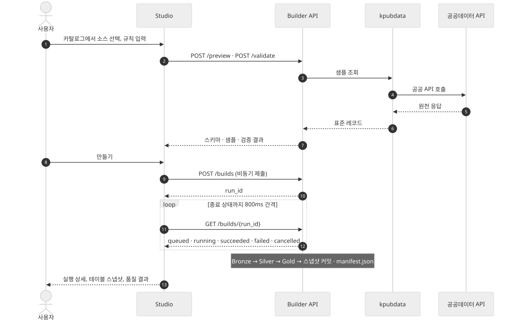
POST /preview, POST /validate를 동시에 요청POST /builds로 비동기 제출하고 run_id 수신GET /builds/{run_id}를 800ms 간격으로 조회 (탭이 숨겨지면 중단)| 영역 | 메서드·경로 | 용도 |
|---|---|---|
| 상태 | GET /healthz · /readyz | 생존·준비 상태 확인 (인증 없음) |
GET /version | API 계약 버전 조회 | |
GET /metrics | Prometheus 형식 지표 (관리자 전용) | |
GET /monitoring/summary · /monitoring/builds | API·대기열·작업자·저장소 상태, 시간대별 실행 통계 | |
| 카탈로그·연결 | GET /catalog | 제공 기관과 소스 데이터셋 목록 |
GET /providers | 제공 기관과 설정 상태 | |
POST /providers/{p}/test · /probe | 연결 확인, 데이터셋별 키 확인 | |
GET /providers/{p}/status | 호출자의 자격 증명으로 본 연결 상태 | |
GET·PUT·DELETE /providers/{p}/credential | 저장된 자격 증명 조회·등록·삭제 | |
| 업로드 | POST /uploads | 파일 소스용 파일 업로드 |
GET /uploads · GET·DELETE /uploads/{id} | 업로드 목록, 메타데이터 조회, 삭제 | |
| 명세 | POST /validate | BuildSpec 검증 |
POST /preview | 저장 없이 소스별 스키마와 샘플 행 반환 | |
| 실행 | POST /build | 동기 실행. 요청 안에서 파이프라인 수행 |
POST /builds | 비동기 실행 제출. run_id 반환 | |
GET /builds | 실행 이력 목록 | |
GET /builds/{id} | 작업 상태 조회 | |
POST /builds/{id}/cancel | 협력적 취소 | |
GET /builds/{id}/manifest | manifest.json 본문 | |
GET /builds/{id}/spec | 실행에 쓰인 BuildSpec 스냅샷 | |
GET /builds/{id}/events | 실행 이벤트 타임라인 | |
GET /builds/{id}/stages · /stages/{stage} | Bronze·Silver·Gold 단계 상태와 상세 | |
GET /builds/{id}/quality | 실행의 품질 결과 |
| 영역 | 메서드·경로 | 용도 |
|---|---|---|
| 산출물 | GET /artifacts/{id} · /artifacts/{id}/{path} | 실행 작업공간의 파일 목록, 파일 내려받기 |
| 테이블 | GET /datasets · /datasets/{id} | 만든 테이블 목록, 요약 |
GET /datasets/{id}/runs · /runs/{run} | 테이블의 실행 이력 | |
GET /datasets/{id}/quality/history | 품질 이력 | |
GET /quality/summary · /quality/issues | 품질 요약, 조치가 필요한 항목 | |
| 웨어하우스 | GET /warehouse/tables · /tables/{name} | 커밋된 테이블, 읽을 수 있는 스냅샷 |
GET /warehouse/tables/{name}/profile | 스냅샷의 컬럼 프로파일 | |
POST /warehouse/query | 고정한 스냅샷에 읽기 전용 SQL | |
POST /warehouse/rows | 스냅샷의 한 페이지 행 | |
POST /warehouse/aggregate | 검증된 집계 | |
POST·GET /warehouse/exports, /exports/{id}/download | 질의 결과 내보내기 생성·목록·내려받기 | |
| 질의·분석 | POST /query | 실행의 Silver·Gold 표에 읽기 전용 SQL |
GET·POST /analyses | 저장된 분석 목록, 스냅샷에 고정해 저장 | |
POST /analyses/{id}/run · DELETE /analyses/{id} | 저장한 스냅샷으로 다시 실행, 삭제 | |
| 개정 이력 | PUT·GET /revisions/{kind}/{doc} | 명세·주석의 새 개정 저장, 조회 |
GET …/history · POST …/revert | 개정 이력, 되돌리기 | |
| 게시 | GET /builds/{id}/publish/readiness | 게시 준비 상태와 차단 사유 |
POST /builds/{id}/publish | 게시 실행 | |
GET·DELETE /builds/{id}/publish/receipt | 게시 영수증 조회·초기화 | |
POST …/publish/reconcile · GET …/publish/audit | 대상과 대조, 감사 기록 | |
| 관리 | GET /admin/config | 현재 적용 중인 정책 |
GET /admin/runs | 전체 사용자의 실행 (메타데이터) | |
GET /admin/users, POST …/approve · reject | 가입 신청 목록, 승인·거절 |
contract/builder-api.yaml (OpenAPI)X-API-Key 또는 Authorization: Bearer (OIDC JWT). /healthz, /readyz만 인증 없이 응답X-Provider-Key (미리보기·실행·연결 확인), 게시 자격 증명: X-Publish-Credential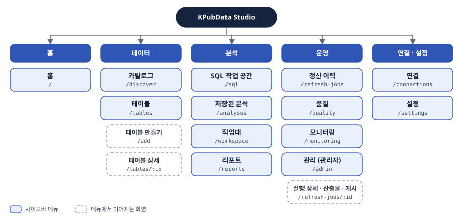
| 그룹 | 메뉴 | 경로 | 설명 |
|---|---|---|---|
| - | 홈 | / | 조치가 필요한 테이블과 최근 변경 |
| 데이터 | 카탈로그 | /discover | 공공 API 소스 데이터셋 탐색 |
| 테이블 | /tables | 소스로 만든 테이블 목록과 상세 | |
| 분석 | SQL 작업 공간 | /sql | 테이블 스냅샷에 SQL 실행 |
| 저장된 분석 | /analyses | 스냅샷에 고정해 저장한 분석 | |
| 작업대 | /workspace | 최근 작업과 저장한 BuildSpec | |
| 리포트 | /reports | 근거 기반 리포트 작성 | |
| 운영 | 갱신 이력 | /refresh-jobs | 테이블을 만들고 갱신한 실행 기록 |
| 품질 | /quality | 품질 검사 결과와 스키마 변화 | |
| 모니터링 | /monitoring | Builder 상태와 실행 통계 | |
| 관리 | /admin | 운영 정책·전체 실행·가입 승인 (관리자 전용) | |
| 하단 | 연결 | /connections | 제공 기관 자격 증명 |
| 설정 | /settings | Builder 연결, 계정, AI 키 |
/add)는 메뉴가 아니라 카탈로그·테이블 화면의 동작으로 진입/datasets, /builds, /provider, /validate, /preview, /artifacts)는 새 경로로 자동 이동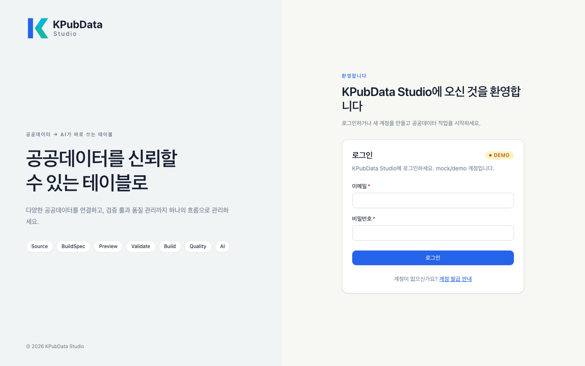
| 화면 개요 | Keycloak 로그인으로 들어가는 진입 화면 |
|---|---|
| 주요 UI 구성요소 |
|
| 상태·상호작용 |
|
| 관련 API | Keycloak 인증 서버 (Builder API 호출 없음) |
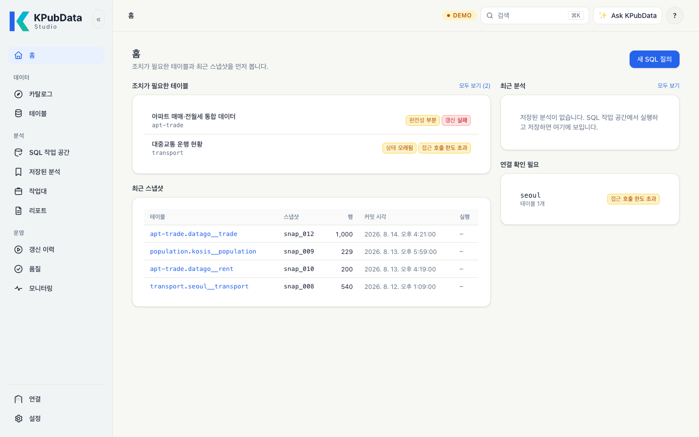
| 화면 개요 | 조치가 필요한 테이블과 최근 변경을 먼저 보여주는 시작 화면 |
|---|---|
| 주요 UI 구성요소 |
|
| 상태·상호작용 |
|
| 관련 API | GET /datasets, GET /builds, GET /warehouse/tables, GET /analyses |
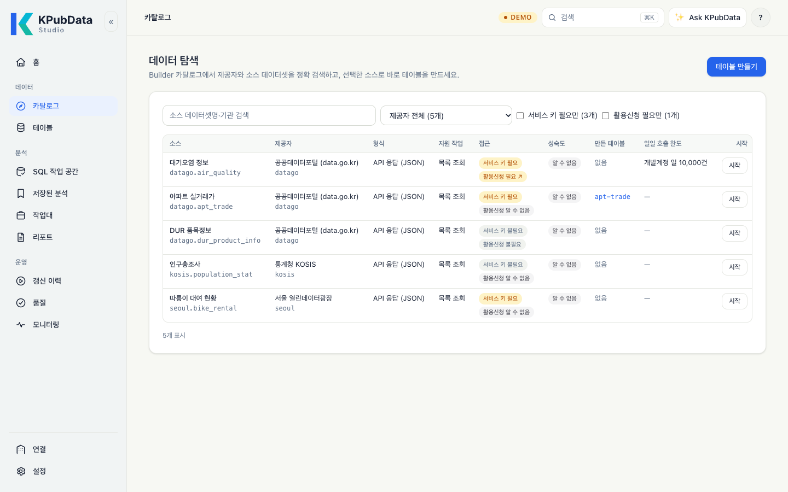
| 화면 개요 | Builder가 제공하는 소스 데이터셋을 비교 표로 찾는 화면 |
|---|---|
| 주요 UI 구성요소 |
|
| 상태·상호작용 |
|
| 관련 API | GET /catalog, GET /datasets |
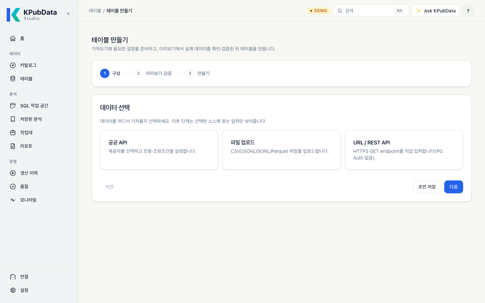
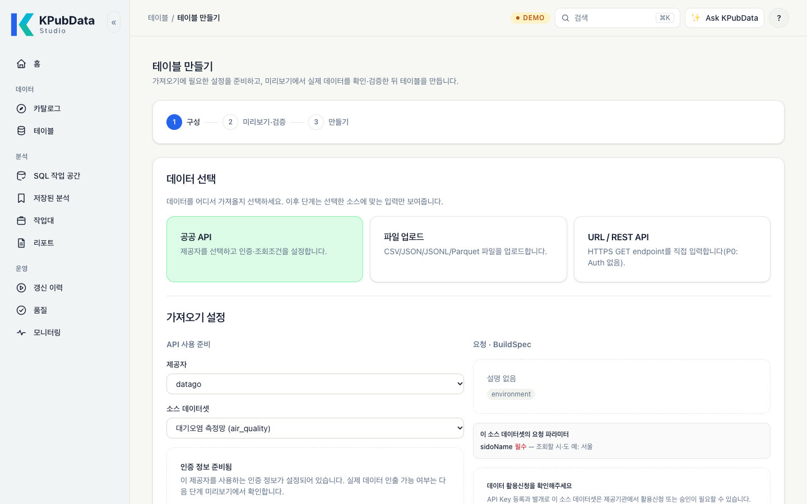
| 화면 개요 | 소스 선택부터 생성까지 3단계로 진행하는 마법사 |
|---|---|
| 주요 UI 구성요소 |
|
| 상태·상호작용 |
|
| 관련 API | POST /preview, POST /validate, POST /uploads, GET /datasets/{id}, POST /builds |
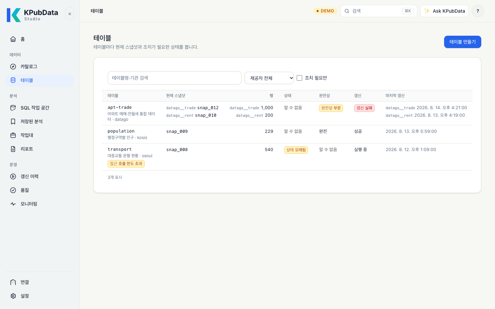
| 화면 개요 | 만든 테이블을 현재 스냅샷과 상태로 확인하는 목록 화면 |
|---|---|
| 주요 UI 구성요소 |
|
| 상태·상호작용 |
|
| 관련 API | GET /datasets, GET /warehouse/tables |
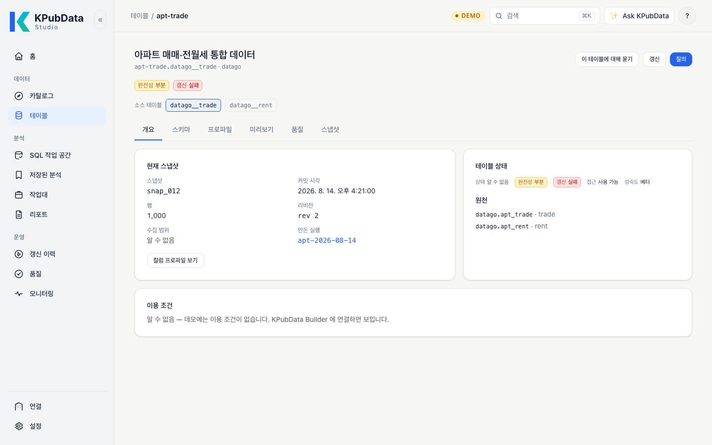
| 화면 개요 | 테이블 하나의 스냅샷·스키마·품질을 탭으로 확인하는 화면 |
|---|---|
| 주요 UI 구성요소 |
|
| 상태·상호작용 |
|
| 관련 API | GET /warehouse/tables/{name}, GET /warehouse/tables/{name}/profile, POST /warehouse/rows, GET /datasets/{id}/quality/history |
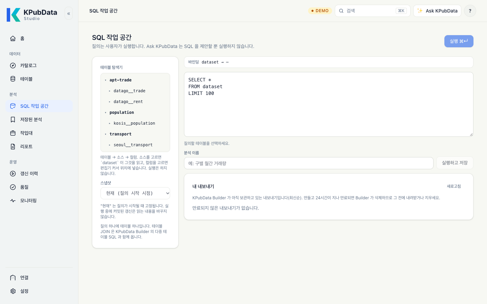
| 화면 개요 | 테이블 스냅샷 하나에 읽기 전용 SQL을 실행하는 화면 |
|---|---|
| 주요 UI 구성요소 |
|
| 상태·상호작용 |
|
| 관련 API | POST /warehouse/query, POST /warehouse/aggregate, POST /warehouse/exports, POST /analyses, POST /query |
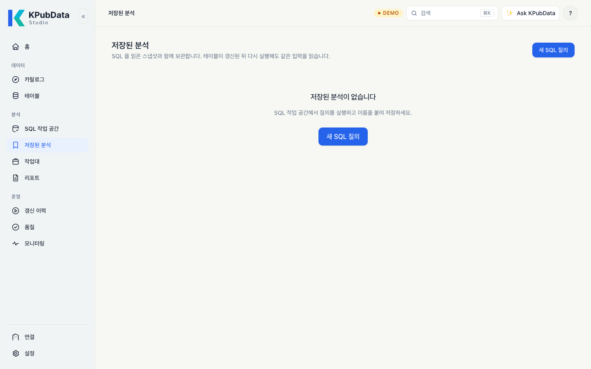
| 화면 개요 | 스냅샷에 고정해 저장한 분석을 다시 실행하는 화면 |
|---|---|
| 주요 UI 구성요소 |
|
| 상태·상호작용 |
|
| 관련 API | GET /analyses, POST /analyses/{id}/run, DELETE /analyses/{id} |
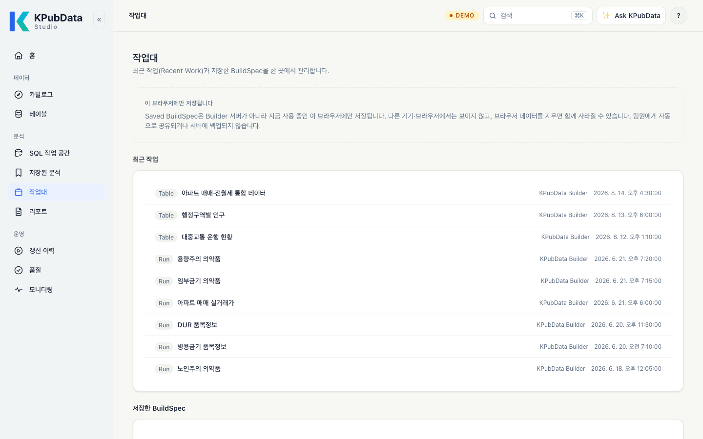
| 화면 개요 | 최근 작업과 저장한 BuildSpec을 한곳에서 관리하는 화면 |
|---|---|
| 주요 UI 구성요소 |
|
| 상태·상호작용 |
|
| 관련 API | GET /datasets, GET /builds (저장한 BuildSpec은 브라우저 저장소) |
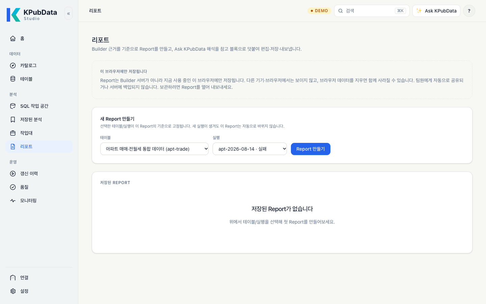
| 화면 개요 | 실행 근거를 기준으로 리포트를 만들고 편집하는 화면 |
|---|---|
| 주요 UI 구성요소 |
|
| 상태·상호작용 |
|
| 관련 API | GET /datasets, GET /datasets/{id}/runs 등 실행 근거 조회 (리포트 본문은 브라우저 저장소) |
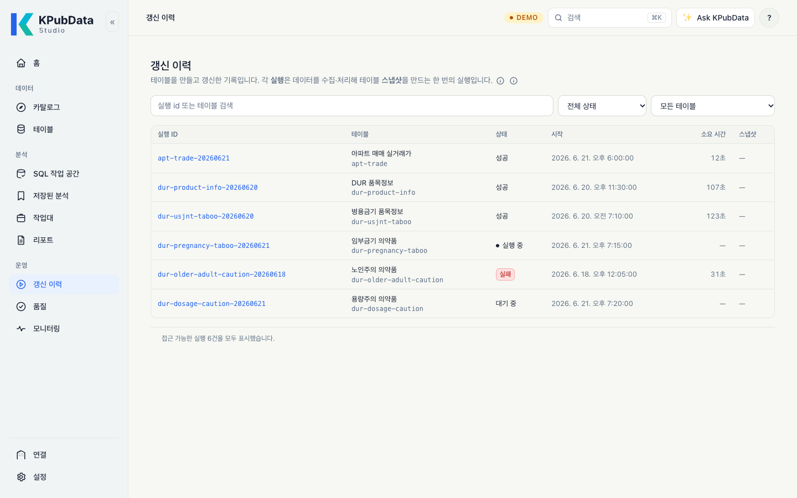
| 화면 개요 | 테이블을 만들고 갱신한 실행을 한 표로 조회하는 화면 |
|---|---|
| 주요 UI 구성요소 |
|
| 상태·상호작용 |
|
| 관련 API | GET /builds?limit= |
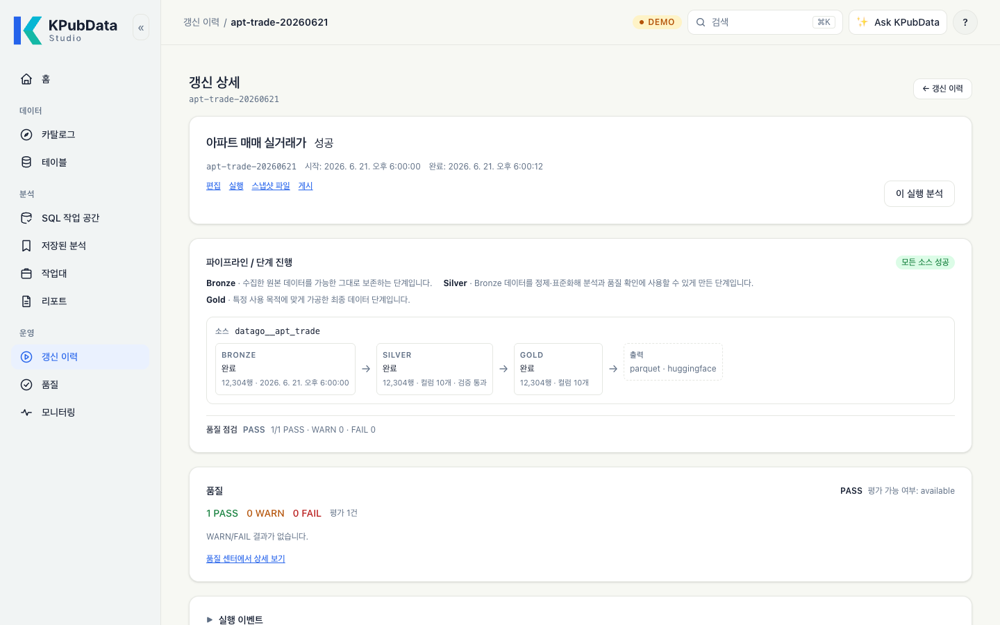
| 화면 개요 | 실행 하나의 단계별 결과와 품질, 이벤트를 확인하는 화면 |
|---|---|
| 주요 UI 구성요소 |
|
| 상태·상호작용 |
|
| 관련 API | GET /builds/{id}, GET /builds/{id}/stages, GET /builds/{id}/quality, GET /builds/{id}/events, GET /builds/{id}/spec, POST /builds/{id}/cancel |
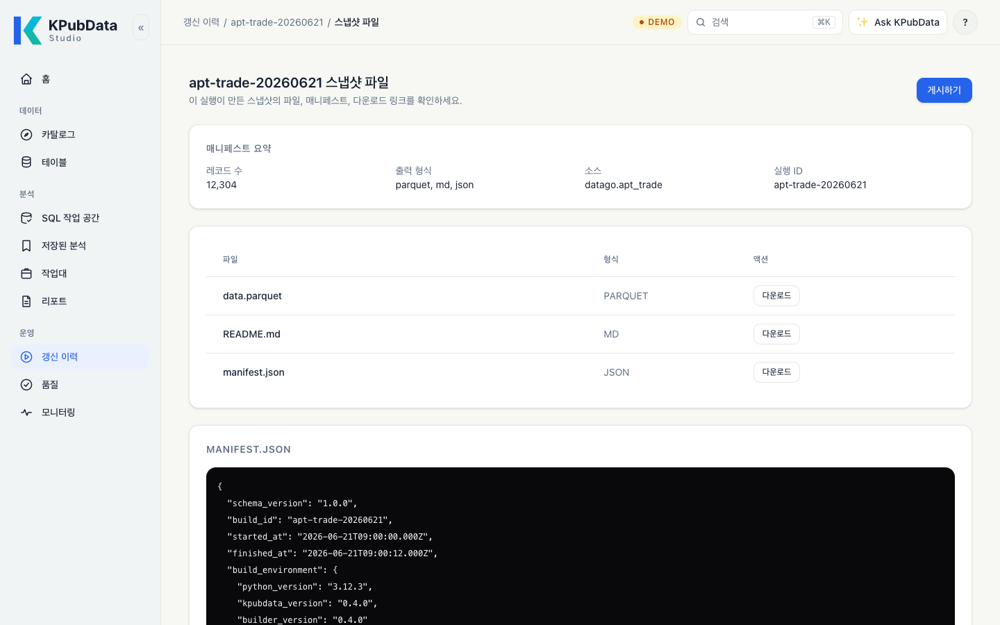
| 화면 개요 | 실행이 만든 파일과 Manifest를 확인하는 화면 |
|---|---|
| 주요 UI 구성요소 |
|
| 상태·상호작용 |
|
| 관련 API | GET /builds/{id}/manifest, GET /artifacts/{id}, GET /artifacts/{id}/{path} |
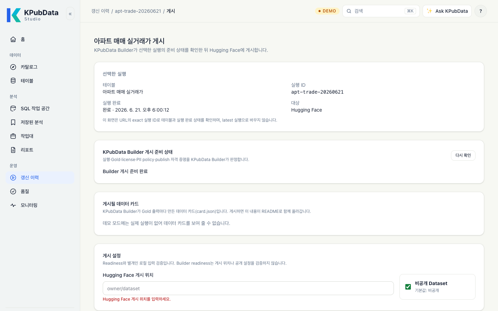
| 화면 개요 | 실행 결과를 Hugging Face에 게시하는 화면 |
|---|---|
| 주요 UI 구성요소 |
|
| 상태·상호작용 |
|
| 관련 API | GET /builds/{id}/publish/readiness, POST /builds/{id}/publish, POST /builds/{id}/publish/reconcile, DELETE /builds/{id}/publish/receipt |
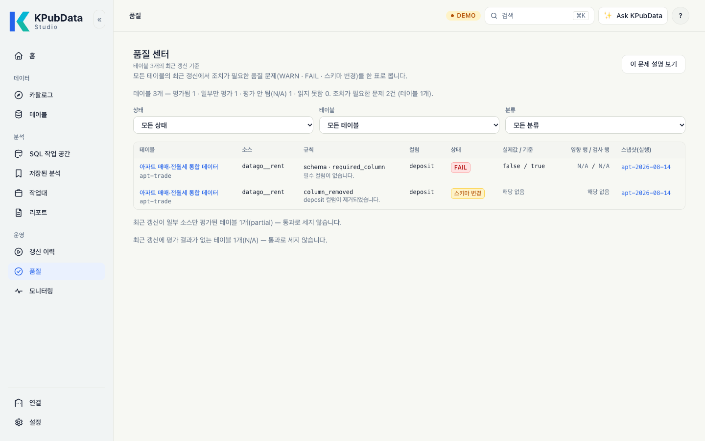
| 화면 개요 | 테이블 전체의 품질 경고와 스키마 변화를 모아 보는 화면 |
|---|---|
| 주요 UI 구성요소 |
|
| 상태·상호작용 |
|
| 관련 API | GET /quality/summary, GET /quality/issues |
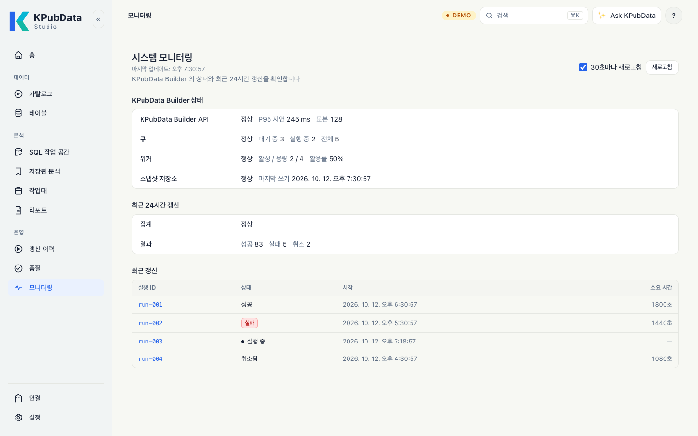
| 화면 개요 | Builder 상태와 최근 24시간 실행 현황을 확인하는 화면 |
|---|---|
| 주요 UI 구성요소 |
|
| 상태·상호작용 |
|
| 관련 API | GET /monitoring/summary, GET /monitoring/builds |
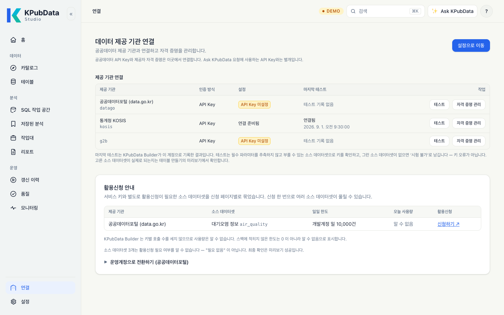
| 화면 개요 | 공공데이터 제공 기관의 자격 증명을 관리하는 화면 |
|---|---|
| 주요 UI 구성요소 |
|
| 상태·상호작용 |
|
| 관련 API | GET /providers, POST /providers/{p}/test, POST /providers/{p}/probe, GET·PUT·DELETE /providers/{p}/credential |
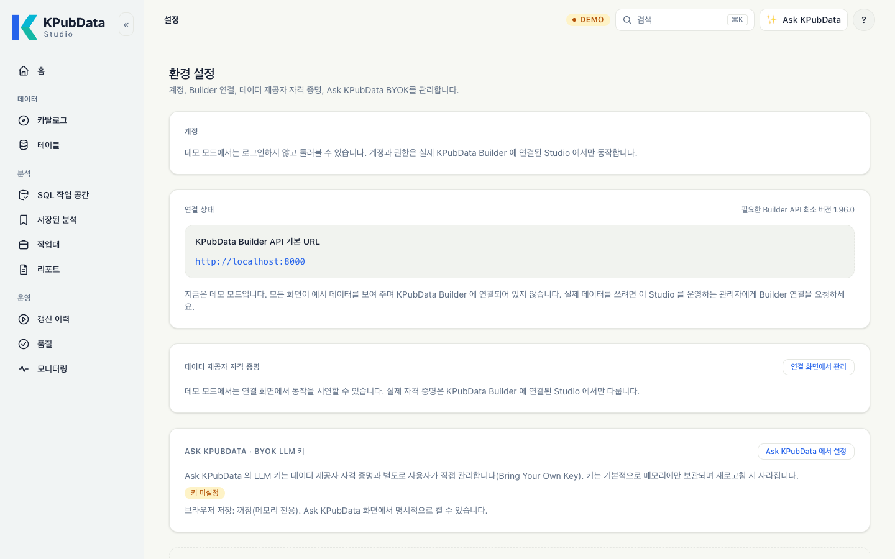
| 화면 개요 | Builder 연결과 계정, AI 키 상태를 확인하는 화면 |
|---|---|
| 주요 UI 구성요소 |
|
| 상태·상호작용 |
|
| 관련 API | GET /version, GET /providers |
| 화면 개요 | 현재 화면의 테이블·실행·품질 문맥으로 질문하고 다음 동작까지 이어 가는 AI 도우미 |
|---|---|
| 주요 UI 구성요소 |
|
| 상태·상호작용 |
|
| 관련 API | GET /catalog, GET /datasets/*, GET /builds/*, POST /query, POST /validate, 외부 LLM API |
| 화면 개요 | 관리자가 운영 정책과 전체 실행, 가입 신청을 확인하는 화면 |
|---|---|
| 주요 UI 구성요소 |
|
| 상태·상호작용 |
|
| 관련 API | GET /admin/config, GET /admin/runs, GET /admin/users, POST /admin/users/{id}/approve · reject |
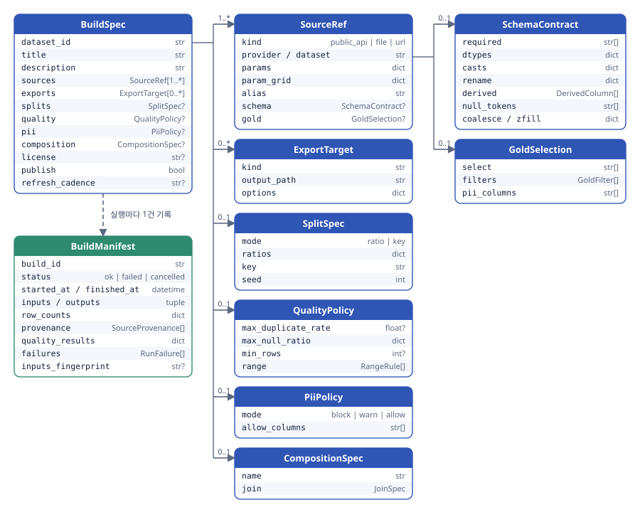
builds는 manifest.json과 종료 기록에서 다시 만들 수 있는 파생 인덱스임tables·table_snapshots는 웨어하우스 카탈로그이며 스냅샷 본문은 Parquet 파일임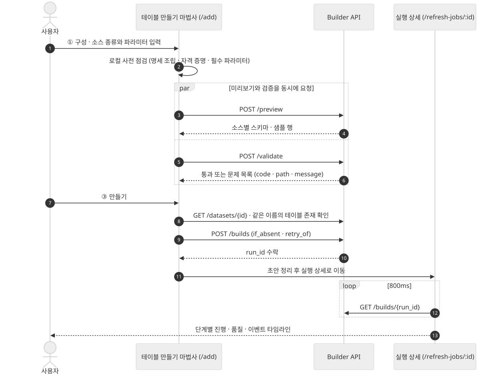
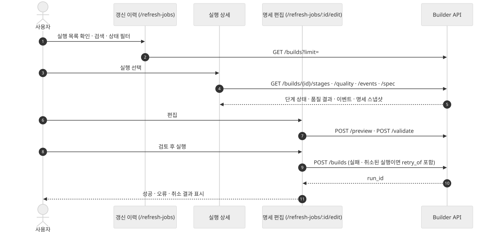
retry_of를 보내며, 수집 체크포인트를 이어받음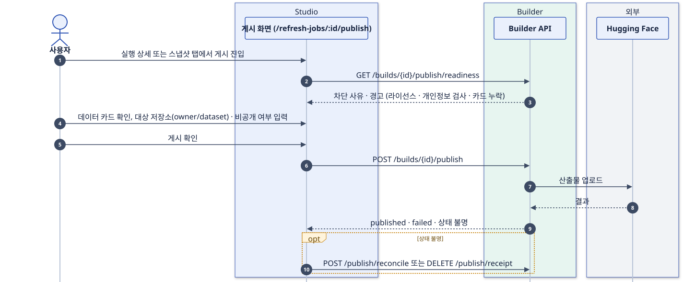
key=value 형태, 무작위성이 높은 긴 문자열을 자리표시자로 치환
| 상태 | 의미 |
|---|---|
queued | 대기열에 들어가 실행을 기다림 |
running | 소스를 수집하고 단계를 수행하는 중 |
cancelling | 취소가 요청되어 다음 단계 경계에서 끝나기를 기다림 |
succeeded | 모든 소스가 성공하고 테이블 커밋까지 끝남 |
failed | 소스 실행, 조립 또는 테이블 커밋에서 실패 |
cancelled | 사용자 요청으로 취소됨 |
| 요청 시점 상태 | 결과 | HTTP |
|---|---|---|
queued | 즉시 cancelled. 파이프라인을 한 번도 실행하지 않음 | 200 |
running | cancelling으로 바뀌고 다음 단계 경계에서 cancelled | 200 |
cancelling · cancelled | 변화 없음 (여러 번 요청해도 같은 결과) | 200 |
succeeded · failed | 취소 불가 | 409 |
partial=true인 Manifest와 함께 보존GET /builds/{id}를 조회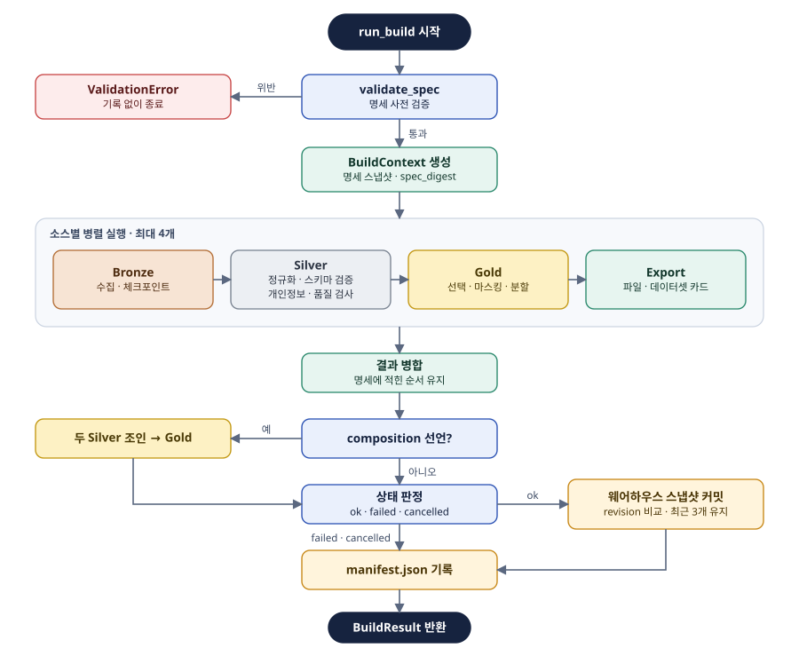
run_build()가 BuildSpec을 받아 validate_spec()으로 먼저 검증. 위반이 있으면 ValidationError로 끝나며 작업공간도 기록도 만들지 않음BuildContext.create()로 실행 작업공간을 만들고 명세 스냅샷(buildspec.yaml)과 spec_digest 기록BuildResult(status, outcomes, manifest_path, …) 반환| 계층 | 값 | 비고 |
|---|---|---|
| 오케스트레이터·Manifest | ok · failed · cancelled | 실행 결과의 원본 값 |
| HTTP API 작업 상태 | queued · running · cancelling · succeeded · failed · cancelled | ok는 succeeded로 표시. 테이블 커밋이 실패하면 failed |
| 품질 검사 | pass · warn · fail | 평가하지 못한 규칙은 결과에서 제외 |
run_endings 표에 종료 기록으로 남김status=cancelled, partial=true로 Manifest를 남김○ 명세에 선언한 규칙만 아래 순서로 적용하며, 선언하지 않은 변환은 하지 않음
| 순서 | 규칙 | 명세 항목 | 동작 |
|---|---|---|---|
| 1 | 읽기 형식 | read_as | 지정한 컬럼을 문자열로 읽음 (앞자리 0 보존 등) |
| 2 | 결측 토큰 | null_tokens, column_null_tokens | '-', 'N/A' 같은 값을 결측으로 처리. 컬럼별 토큰은 전역 토큰에 더해짐 |
| 3 | 컬럼 병합 | coalesce | 이름만 다른 여러 컬럼을 하나로 합침. 값이 서로 다르면 실패 |
| 4 | 이름 변경 | rename | 원본 필드명을 표준 이름으로 변경 |
| 5 | 자리 채움 | zfill | 지정한 자릿수까지 왼쪽을 0으로 채움 (행정 코드 등) |
| 6 | 형 변환 | casts | bool·date·datetime·float·int·str과 천 단위 쉼표 숫자(int_comma, float_comma). 변환으로 값이 사라지면 오류 |
| 7 | 파생 컬럼 | derived | date_parts(연·월·일 3개 컬럼 → 날짜), join_key(여러 컬럼 → 조인 키) |
silver/{source}/table.parquet에 저장stats.json), 미리보기(preview.json) 생성| 규칙 | 검사 내용 | 기준 |
|---|---|---|
required_column | 필수 컬럼 존재 여부 | 스키마 계약의 required |
dtype | 컬럼 자료형 일치 여부 | 스키마 계약의 dtypes |
max_duplicate_rate | 중복 행 비율 | 0~1 사이 상한 |
max_null_ratio | 컬럼별 결측 비율 | 컬럼별 상한 |
min_rows | 최소 행 수 | 하한 |
range | 숫자 컬럼의 값 범위 | min·max (경계 포함) |
compare_columns | 두 컬럼의 대소·동일 관계 | eq·ne·gt·gte·lt·lte |
pass·warn·fail. 규칙마다 심각도(warn·fail)를 명세에서 지정| 종류 | 검출 방법 |
|---|---|
| 주민등록번호 | 하이픈이 있는 형식, 또는 13자리 숫자에 대해 날짜와 검증 숫자 확인 |
| 전화번호 | 국내 전화번호 형식 정규식 |
| 이메일 | 이메일 형식 정규식 |
| 사업자등록번호 | 사업자등록번호 형식 정규식 |
| 컬럼명 | 성명·주소·연락처 등 개인정보를 뜻하는 이름 포함 여부 |
pii.mode): block은 검출 시 소스 중단, warn은 기록 후 진행, allow는 통과 (게시와 함께 쓸 수 없음)gold.pii_columns에 적용[masked]로, 그 밖의 자료형은 결측으로 바꿈publish_unmasked로 예외를 둔 컬럼은 Manifest에 경고로 남음ratio: 시드와 행 순번의 해시로 정렬한 뒤 비율대로 자름 (hash-sort-v2). 같은 입력이면 항상 같은 결과이고 개수가 정확히 맞음key: 지정한 컬럼의 값별로 나눔. 결측은 __null__, 컬럼 없음은 __missing__gold/{name}/splits/{split}.parquet에 저장○ 상태가 ok인 실행의 Gold를 읽기 전용 스냅샷으로 커밋하고 테이블의 현재 스냅샷을 바꿈
tables/{id}/snapshots/{id}/로 옮기고 읽기 전용으로 만듦| 사유 코드 | 발생 조건 | 처리 |
|---|---|---|
table_exists | 새 테이블로 만들기를 요청했는데 같은 이름의 테이블이 이미 있음 | 커밋하지 않고 실패로 기록 |
empty_result | 결과가 0행이고 allow_empty가 꺼져 있음 | 기존 스냅샷을 유지 |
conflict | 실행 시작 때의 revision과 현재 revision이 다름 | 먼저 커밋한 쪽을 유지하고 거부 |
commit_failed | 파일 이동·카탈로그 기록 중 오류 | 실패로 기록, Manifest에 사유 남김 |
dataset이라는 이름의 CTE 불가VALUES, UNNEST, LATERAL, 테이블 함수, 표본 추출(TABLESAMPLE) 불가current_setting, getenv, version 등 44종) 불가random, uuid, now 등 18종) 불가dataset 하나만 허용servicekey, api_key, *token, *secret)key: value, key=value 형태 제거○ Medallion 구조 기반 수집·처리 — Bronze / Silver / Gold 3단계 + Export
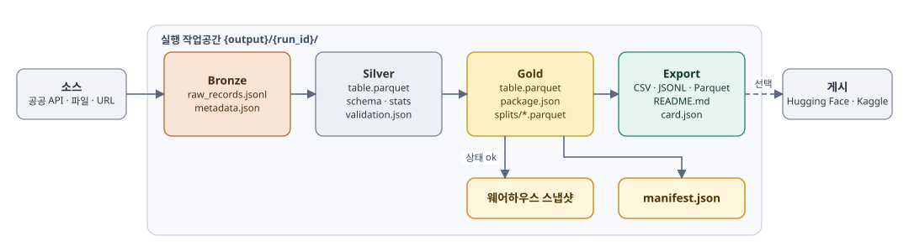
| 단계 | 처리 내용 | 사용 기술 | 입력 → 출력 |
|---|---|---|---|
| Bronze (원천 수집) | 공공 API·업로드 파일·URL의 원본을 그대로 수집. 수집 시각·파라미터·건수·체크섬 기록. 파라미터 조합별 체크포인트 | kpubdata, URL 수집기 | 외부 원본 → bronze/{source}/raw_records.jsonl, metadata.json |
| Silver (정제·검증) | 명세에 선언한 규칙만 적용: 결측 토큰 → 컬럼 병합 → 이름 변경 → 자리 채움 → 형 변환 → 파생 컬럼. 필수 컬럼·자료형 검증, 통계·미리보기 생성, 개인정보·품질 검사 | DuckDB | Bronze → silver/{source}/table.parquet, schema.json, stats.json, validation.json |
| Gold (패키징) | 행 필터와 컬럼 선택, 선언한 개인정보 컬럼 마스킹, 분할, 두 소스 조인 | DuckDB | Silver → gold/{name}/table.parquet, package.json, splits/*.parquet |
| Export (내보내기) | Gold를 exports 설정에 맞춰 파일로 저장하고 데이터셋 카드 생성 | Exporter 6종 (csv, jsonl, parquet, markdown, huggingface, kaggle) | Gold → 산출물 파일, README.md, card.json |
| 웨어하우스 커밋 | 상태가 ok인 실행의 Gold를 읽기 전용 스냅샷으로 커밋. 최근 3개 유지 | SQLite 카탈로그, Parquet | Gold → tables/{id}/snapshots/{id}/ |
| 소스 종류 | 입력 | 형식 | 제한·규칙 |
|---|---|---|---|
| public_api | kpubdata 제공 기관과 데이터셋, 수집 파라미터 | kpubdata 표준 레코드 | 페이지 단위로 수집해 바로 저장. param_grid 조합별 체크포인트. 제공 기관별 분당 호출 상한 설정 가능 |
| file | POST /uploads로 올린 파일의 upload_id | csv, json, jsonl, parquet | upload_id 형식 검사, 인코딩 지정 가능 (기본 utf-8) |
| url | HTTPS 주소 | json, jsonl, csv | GET만 허용, 인증 헤더 불가, 주소에 사용자 정보 불가. 연결 5초·읽기 15초, 리다이렉트 5회, 20MiB 이하. DNS 고정으로 내부망 접근 차단 |
metadata.json과 Manifest에 기록retry_of)은 하루 이내의 param_grid 체크포인트를 이어받아 끝난 조합을 다시 받지 않음checkpoints_not_reused에 남음| 분야 | 주기 | 상태 |
|---|---|---|
| 기상 예보 | 3시간마다 | 운영 |
| 부동산 실거래 (매매·전월세) | 매월 1~10일 | 운영 |
| 관광 정보 | 매주 월요일 | 운영 |
| 의약품 안전 사용(DUR) | 매주 토요일 | 운영 |
| 대기질 | 수동 실행 | 일정 중지 |
publish-dataset.yml)을 호출해 Hugging Face에 게시| 기능ID | 패키지·모듈 | 역할 |
|---|---|---|
| A02_B01~02 | spec/ | BuildSpec 모델, YAML 로더, 검증기, 실행 스냅샷, 지문, 갱신 주기, param_grid |
| A02·A03 | pipeline/ | 오케스트레이터(run_build), 실행 문맥, 취소 계약, 미리보기, 내보내기, 실패 분류, 카드 자료 |
| A01_B01 | stages/bronze/ | 소스 수집, 임시 기록, 체크포인트, 저장 |
| A01_B02 | ingestion/ | URL 수집(내부망 차단), 파일 읽기(csv·json·jsonl·parquet) |
| A02_B05 | stages/silver/, tabular/ | DuckDB 실행 환경, 적재, 정규화, 검증, 통계, 미리보기, 스키마 변화 감지 |
| A02_B06 | quality/ | 품질 평가기와 결과 모델 |
| A06_B01 | stages/silver/pii.py, stages/gold/pii.py | 개인정보 검사, 선언 컬럼 마스킹 |
| A02_B07 | stages/gold/ | 선택, 분할, 조인, 패키지 구성, 저장 |
| A03_B01 | stages/gold/card.py, catalog_info.py | 데이터셋 카드(README.md, card.json) 생성 |
| A03_B02 | exporters/ | csv, jsonl, parquet, markdown, huggingface, kaggle와 등록 체계 |
| A03_B05 | publishers/ | local, huggingface, kaggle |
| A03_B03 | manifest/, events/ | Manifest 모델·기록·출처·체크섬, 실행 이벤트와 종료 기록 |
| A03_B04 | warehouse/ | 테이블 카탈로그(SQLite), 스냅샷 배치, 커밋, 정리, 백업 |
| A06_B03 | query/ | 읽기 전용 SQL 검사, 격리 실행, 집계, 행 조회, 프로파일, 내보내기 |
| A04·A08 | service/ | HTTP 서버, 경로, 인증, 비동기 작업, 게시, 모니터링, 관리, 재배포 판정 |
| A06_B04 | credentials/, uploads/ | 자격 증명 암호화 저장, 업로드 저장 |
| A01_B04 | agent/, verify/ | 신규 데이터셋 탐색, 활용 신청 승인 확인, 명세 실검증 |
| - | store/ | 실행 인덱스, 상태 목록, 스키마 버전, 상태 백업·잠금 |
| - | egress.py, rate_limit.py | 제공 기관별 호출 상한, 분당 요청 제한 |
| - | retention.py, replay.py, diff.py | 실행 보존 기간 정리, 고정 자료 재생, Manifest 비교 |
| - | settings_catalog.py, logging_redaction.py | 환경변수 목록, 로그에서 키 제거 |
| - | cli.py | 명령줄 진입점 (kpubdata-builder) |
| 명령 | 용도 |
|---|---|
validate | BuildSpec YAML 검증 |
preview | 산출물을 쓰지 않고 스키마와 샘플 행 확인 |
build | Medallion 파이프라인으로 BuildSpec 실행 |
publish | 산출물을 로컬 또는 원격 대상에 게시 |
serve | Builder HTTP 서비스 실행 |
settings | 실제 적용 중인 설정 출력 (비밀값 가림)과 점검 |
fixtures export | 재생용 고정 자료를 디렉터리로 복사 |
rebuild-index | 파일을 훑어 실행 인덱스 재구성 |
discover · monitor · pipeline | data.go.kr 메타데이터 탐색, 활용 신청 승인 확인, 신규 데이터셋 온보딩 자동화 |
verify | 데이터셋 명세를 실제 API로 검증 |
prune-cancelled · prune-runs | 취소된 부분 실행, 보존 기간이 지난 실행 정리 |
delete-user | 사용자와 그 데이터를 단계별로 삭제 |
warehouse-gc · warehouse-hold | 필요 없는 스냅샷 정리, 스냅샷 보존 지정 |
warehouse-backup · warehouse-restore | 테이블 카탈로그와 스냅샷 파일 백업·복원 |
backup · verify-backup · restore | 전체 상태 백업, 백업 검증, 복원 |
kpubdata-buildervalidate·preview·build는 HTTP 서비스와 같은 파이프라인을 호출| 기능ID | 디렉터리 (src/features) | 역할 |
|---|---|---|
| A04_B01 | home, onboarding | 홈 데이터(조치 필요, 연결 문제, 최근 스냅샷), 첫 실행 체크리스트, 활용 신청 안내 |
| A04_B02 | discover | 카탈로그 조회, 평탄화·필터, 비교 표 |
| A04_B02 | add-data | 테이블 만들기 마법사 3단계, 초안 저장, 기존 테이블 확인, 자격 증명 선행 조건, 업로드 |
| A04_B02 | preview, validation | /preview, /validate 클라이언트 |
| A04_B02 | build-spec | Studio↔Builder 명세 변환, YAML, 실행별 명세 보관, 초안, 비교, 개정 이력, 편집 6단계 |
| A04_B03 | datasets, data-table | 테이블 목록 모델, 실행 이력, 웨어하우스 보기, 프로파일, 품질 추세, 공통 표, 행 조회 |
| A04_B04 | sql, charts, export | SQL 실행, 저장된 분석, 테이블 탐색기, 집계 차트, 내보내기 |
| A04_B05 | reports, workspace | 리포트 저장소·근거·내보내기·편집기, 최근 작업, 저장한 BuildSpec |
| A04_B06 | runs, artifacts | 비동기 실행과 상태 조회, 이벤트 조회, 실행 상세, 산출물 |
| A04_B06 | publish | 게시 클라이언트, 데이터 카드 미리보기, 복구 패널 |
| A04_B07 | provider, version-check | 연결 표, 키 확인, Builder 버전·계약 비교, 불일치 배너 |
| A06_B02 | licence | 이용 조건 요약, 실행별 라이선스 |
| A06_B04 | auth | Keycloak 연동, 토큰 갱신, 로그인 보호, 사용자별 저장소 분리 |
| A07_B01 | assistant | Ask KPubData: 서랍·본문, 세션, 키 설정, 프롬프트, 구조 검증, 근거 대조, 동작, 질의, 비밀값 제거 |
| A08_B01 | monitoring, admin | 모니터링 모델과 패널, 관리자 판별과 관리 화면 |
| A08_B02 | quality | 품질 모델(PASS·WARN·FAIL·N/A), 항목 표, 배지 |
shared/lib/builderApi.ts 한 곳에서 수행| 파일 (src/pages) | 화면 | 경로 |
|---|---|---|
LoginPage · SignupPage | 로그인, 가입 | /login, /signup |
HomePage | 홈 | / |
DiscoverPage | 카탈로그 | /discover |
AddDataPage | 테이블 만들기 | /add |
DatasetCatalogPage · DatasetDetailPage | 테이블, 테이블 상세 | /tables, /tables/:id |
SqlWorkspacePage · AnalysesPage | SQL 작업 공간, 저장된 분석 | /sql, /analyses |
WorkspacePage | 작업대 | /workspace |
ReportsPage · ReportEditorPage | 리포트 목록, 편집기 | /reports, /reports/:id |
BuildsPage | 갱신 이력, 실행 상세 | /refresh-jobs, /refresh-jobs/:id |
NewBuildPage | 명세 편집·재실행 | /refresh-jobs/:id/edit |
BuildArtifactsPage · BuildPublishPage | 산출물, 게시 | …/artifacts, …/publish |
QualityPage · MonitoringPage | 품질, 모니터링 | /quality, /monitoring |
ProviderPage · SettingsPage | 연결, 설정 | /connections, /settings |
AdminPage · AssistantPage | 관리, Ask KPubData | /admin, /assistant |
| 구분 | 내용 |
|---|---|
| Builder | Python 3.10~3.13, DuckDB 1.2 이상, pyarrow, SQLite, sqlglot, uv |
| Studio | React 19.3, TypeScript 6, Vite 8, React Router 7, Zustand 5, Tailwind CSS 4, Zod 4, react-hook-form, yaml |
| 다국어 | i18next, 한국어(기본)·영어 |
| 인증 | Keycloak, keycloak-js (OIDC Authorization Code + PKCE) |
| 실행 환경 | Node 22.13 이상, Docker (Studio는 nginx 이미지로 제공) |
○ BuildSpec 필드 구조 (dataset_id / title / description / sources[] 는 필수)
| 필수/선택 | 필드명 | 타입 | 설명 |
|---|---|---|---|
| 필수 | dataset_id | string | 데이터셋 식별자 |
| 필수 | title | string | 사람이 읽는 제목 |
| 필수 | description | string | 목적과 데이터 설명 |
| 필수 | sources[] | array<SourceRef> | 입력 소스 (1개 이상) |
| 선택 | exports[] | array<ExportTarget> | 내보내기 대상. 비워 두면 테이블 커밋까지만 수행 |
| 선택 | splits | SplitSpec | 분할 정의. 없으면 분할하지 않음 |
| 선택 | quality | QualityPolicy | 품질 기준. 없으면 검사 생략 |
| 선택 | pii | PiiPolicy | 개인정보 검사 정책. 없으면 검사 생략 |
| 선택 | composition | CompositionSpec | 두 소스를 조인해 하나의 Gold 생성 |
| 선택 | license | string | SPDX 식별자 또는 자유 기재. 게시할 때 필수 |
| 선택 | license_name · license_link | string | license가 other일 때의 이름과 조건 링크 |
| 선택 | attribution | string | 출처 표기 문구. 카드의 출처 항목에 표시 |
| 선택 | publish | boolean | 실행 후 게시 여부 (기본 false) |
| 선택 | refresh_cadence | string | 갱신 주기 (ISO-8601 기간: P1D, PT6H, P1W). 갱신 지연 판정에 사용 |
| 선택 | metadata | object | 산출물에 실을 임의 메타데이터 |
spec/models.py, spec/loader.py)normalization_mode, transforms는 없어졌으며 넣으면 로더가 거부함○ SourceRef — BuildSpec의 sources[] 항목
| 필드명 | 타입 (기본값) | 설명 |
|---|---|---|
kind | string (public_api) | 소스 종류: public_api | file | url |
provider · dataset | string | kpubdata 제공 기관과 데이터셋. public_api에서 필수 |
params | object | 수집 파라미터 |
param_grid | object | 파라미터 축. 조합마다 따로 수집 |
alias | string | 출력 키 이름. 조인에서 참조 |
schema | SchemaContract | Silver 정규화·검증 계약 |
gold | GoldSelection | Gold에 남길 컬럼과 행. 없으면 Silver 전체 |
upload_id · format · encoding | string (encoding: utf-8) | 파일 소스: 업로드 식별자, 형식, 인코딩 |
endpoint · method | string (method: GET) | URL 소스: 주소, 메서드 |
allow_empty | boolean (false) | 0행 결과가 기존 테이블을 대체하도록 허용 |
○ SchemaContract — 소스별 정규화·검증 계약 (모두 선택)
| 필드명 | 타입 | 설명 |
|---|---|---|
required | tuple<string> | 필수 컬럼 |
dtypes | dict | 컬럼별 기대 자료형 |
casts | dict | 컬럼별 형 변환 |
rename | dict | 원본 필드명 → 표준 이름 |
derived | tuple<DerivedColumn> | 파생 컬럼 (name, kind, columns) |
read_as | dict | 읽기 형식 지정 (str만 허용) |
null_tokens · column_null_tokens | tuple · dict | 전역·컬럼별 결측 토큰 |
coalesce | dict | 여러 컬럼을 하나로 병합 |
zfill | dict | 왼쪽 0 채움 자릿수 |
spec/models.py| 모델 | 필드명 | 타입 | 설명 |
|---|---|---|---|
| GoldSelection | select | tuple<string> | 남길 컬럼과 순서. 비우면 전체 |
filters | tuple<GoldFilter> | 행 필터. select보다 먼저 적용 | |
pii_columns | tuple<string> | 개인정보로 선언하는 컬럼 | |
publish_unmasked | tuple<string> | 마스킹 없이 게시할 선언 컬럼 (Manifest 경고) | |
| GoldFilter | column · op · value | string · string · any | 연산: eq, ne, gt, ge, lt, le, in, not_null |
| ExportTarget | kind · output_path · options | string · string · object | 내보내기 형식, 경로, 형식별 옵션 |
| SplitSpec | mode · ratios · key · seed | string · dict · string · int | ratio 또는 key 분할 |
| PiiPolicy | mode · allow_columns | string · tuple | block(기본) | warn | allow, 검사 예외 컬럼 |
spec/models.py, spec/loader.py| 모델 | 필드명 | 타입 (기본값) | 설명 |
|---|---|---|---|
| QualityPolicy | max_duplicate_rate (+ severity) | float? (warn) | 중복 행 비율 상한 |
max_null_ratio (+ severity) | dict | 컬럼별 결측 비율 상한 | |
min_rows (+ severity) | int? (warn) | 최소 행 수 | |
range | tuple<RangeRule> | 값 범위 규칙 | |
compare_columns | tuple<CompareColumnsRule> | 컬럼 비교 규칙 | |
| RangeRule | column · min · max · severity | string · float? · float? · string | 경계 포함 범위 |
| CompareColumnsRule | left · operator · right · severity | string × 4 | 연산: eq, ne, gt, gte, lt, lte |
| CompositionSpec | name · join | string · JoinSpec | 조인 결과의 이름, 조인 정의 |
| JoinSpec | left · right | string | 조인할 두 소스의 alias |
left_key · right_key 또는 keys | string · tuple | 단일 키 축약형 또는 복합 키 쌍 (둘 중 하나) | |
type | string (inner) | inner | left | |
cardinality | string? | one_to_one | one_to_many | many_to_one | many_to_many | |
on_duplicate_key · on_null_key | string (warn) | 키 중복·결측 시 warn | fail |
spec/models.py, spec/loader.py○ BuildManifest 필드 구조 — 파이프라인에 들어간 실행마다 1건 생성
| 필드명 | 타입 | 설명 |
|---|---|---|
build_id | string | 실행 식별자 |
started_at / finished_at | datetime | 실행 시작·종료 시각 |
schema_version | string | Manifest 형식 버전 (1.0.0) |
status · partial | string · bool | ok | failed | cancelled. partial은 취소된 실행에서만 true |
inputs / outputs | tuple<string> | 소스 출력 키 / 생성된 산출물 경로 |
warnings / errors | tuple<string> | 경고 / 실패 메시지 |
failures | tuple<RunFailure> | 실패 내역: source_key, stage, code, summary |
row_counts | dict<str,int> | 소스·조인별 Silver 행 수 |
schema_summaries | dict | 소스별 스키마 요약 |
provenance | tuple<SourceProvenance> | 수집 시각, 파라미터, 레코드 수, 체크섬 |
quality_results | dict | 평가한 품질 검사 결과 (pass 포함) |
schema_drift · drift_evaluation | dict | 이전 실행 대비 변화, 축별 평가 여부 |
gold_selection | dict | Silver 입력 행 수, Gold 출력 행 수, 적용 규칙 |
pii_masking | dict | Gold별 마스킹한 컬럼과 예외 컬럼 |
composition | CompositionProvenance? | 조인 내역 |
warehouse_failures | dict | 커밋에 실패한 테이블과 사유 |
artifacts | dict | Gold 디렉터리별 산출물 다이제스트와 작성기 |
build_environment | BuildEnvironment? | Python·kpubdata·Builder 버전 |
inputs_fingerprint (+ algorithm) | string? | 입력 데이터 지문 (sha256:…)과 산출 방식 |
split_algorithm | string? | 비율 분할 알고리즘 (hash-sort-v2) |
reproducibility · checkpoints_not_reused | dict | 체크포인트에서 이어받은 소스, 처음부터 다시 받은 소스 |
created_by · owner_id · retry_of | string? | 요청자 표시 이름, 소유자(응답에서 제외), 재시도 대상 실행 |
manifest/models.py○ 주요 표와 컬럼
| 표 | 컬럼 | 설명 |
|---|---|---|
builds | run_id (PK), status, started_at, finished_at, spec_digest, error, created_by, dataset_id, owner_id, error_code, error_stage | 실행 인덱스. status는 ok·failed·cancelled만 허용. finished_at·dataset_id 인덱스 |
build_events | seq, run_id, timestamp, event, status, source_key, stage, message, metrics | 실행 이벤트 타임라인 |
run_submissions | run_id (PK), owner_id, created_by, submitted_at | 비동기 제출 기록 |
run_endings | run_id (PK), status, stage, code, summary, recorded_at | Manifest 없이 끝난 실행의 종료 기록 |
tables | id (PK), workspace_id, logical_name, current_snapshot_id, revision | 웨어하우스 테이블. (workspace_id, logical_name) 유일 |
table_snapshots | id (PK), table_id (FK), run_id, schema_version, coverage_hash, artifact_digest, row_count, state, created_at, committed_at, owner_id | 스냅샷. state: staging·validated·committed·quarantined·abandoned·retiring |
analyses | analysis_id (PK), workspace_id, owner_id, name, sql, row_limit, table_name, snapshot_id, hold_id, result_meta, created_at | 저장된 분석. 읽은 스냅샷을 함께 보관 |
store/build_index.py, events/store.py, warehouse/catalog.py, service/analyses_api.py| 파일 | 표 | 용도 |
|---|---|---|
_builds.sqlite | builds | 실행 인덱스 (Manifest에서 재구성 가능) |
_build_events.sqlite | build_events, run_submissions, run_endings | 실행 이벤트, 제출·종료 기록 |
_warehouse.sqlite | tables, table_snapshots, snapshot_leases, snapshot_holds | 웨어하우스 카탈로그와 스냅샷 보존 |
_publish_receipts.sqlite | publish_receipts, publish_receipt_audit | 게시 영수증과 감사 기록 |
.service/analyses.sqlite3 | analyses | 저장된 분석 |
.service/revisions.sqlite3 | revisions, revision_audit | 명세·주석 개정 이력 |
.service/uploads.sqlite3 | uploads | 업로드 메타데이터 (큰 본문은 파일로 보관) |
.service/provider-credentials.sqlite3 | provider_credentials | 제공 기관 자격 증명 (암호화) |
.service/provider_tests.sqlite3 | provider_tests | 연결 확인 결과 |
.service/users.sqlite3 | users | 가입 신청 원장 |
{output}/{run_id}/에는 manifest.json, buildspec.yaml, bronze/, silver/, gold/를 파일로 보관{warehouse}/tables/{id}/snapshots/{id}/에 Parquet으로 보관.service/exports/에 보관store/build_index.py, events/store.py, warehouse/catalog.py, store/inventory.py○ validate_spec이 반환하는 문제의 형식: code, path, message, hint
| 검사 영역 | 주요 오류 코드 |
|---|---|
| 필수 항목 | empty_field, missing_sources |
| 소스 식별 | empty_field, blank_alias |
| 내보내기 | unsupported_export_kind |
| 메타데이터 | empty_metadata_key |
| 분할 | missing_ratios, empty_ratio_name, ratio_sum_mismatch, empty_split_key, unsupported_split_mode, time_column_random_split |
| 스키마 계약 | unknown_dtype, unknown_cast_dtype, unknown_read_as_type 외 결측 토큰·병합·자리 채움·이름 변경·파생 규칙 |
| 소스 종류 | unsupported_source_kind, invalid_upload_id, unsupported_source_format, unknown_encoding, unsupported_source_method, unsafe_url_scheme, url_userinfo_forbidden |
| 소스 키 | unsafe_alias, unsafe_source_key, duplicate_source_key, source_key_path_collision |
| 파라미터 축 | param_grid_not_supported, empty_param_grid_axis, param_grid_shadows_params, invalid_param_grid_value |
| 개인정보 정책 | pii_allow_with_publish |
| 라이선스 | missing_license_for_publish, license_other_needs_terms, license_terms_without_other |
| 품질 | empty_range_rule, inverted_range_rule, unknown_severity_column |
| 조인 | duplicate_source_alias, self_join, unknown_composition_source, duplicate_join_key_column, composition_name_collision |
| Gold 선택 | gold_selection_with_composition |
spec/validator.pydef run_build(spec: BuildSpec, *, client: SourceClient, output_root: Path,
run_id: str | None = None, retry_of: str | None = None,
catalog: TableCatalog | None = None, ...) -> BuildResult:
validate_spec(spec) # 위반 시 ValidationError, 기록 없음
context = BuildContext.create(spec, output_root=output_root, run_id=run_id)
...
# Per-source fetch/stage mostly waits on network I/O, so concurrent
# execution via thread pool reduces total time (#247). executor.map
# returns results in spec.sources order, not completion order, so
# downstream merge (manifest) stays deterministic.
max_workers = min(len(spec.sources), _MAX_PARALLEL_SOURCES)
clear_temp_root(context.output_root / context.run_id)
try:
with ThreadPoolExecutor(max_workers=max_workers) as executor:
results = list(executor.map(_worker, spec.sources))
...
if cancelled:
status = "cancelled"
elif errors:
status = "failed"
recorder.run_failed(failed_source_count=len(errors))
else:
status = "ok"
recorder.run_finished()
... # ok일 때 웨어하우스 커밋, manifest.json 기록...은 생략한 부분. 원본: src/kpubdata_builder/pipeline/orchestrator.pydef validate_spec(spec: BuildSpec) -> None:
"""Validate BuildSpec minimum executability.
Raises:
ValidationError: When one or more validation rules fail.
"""
problems: list[ValidationProblem] = []
if not spec.dataset_id.strip():
problems.append(_p("empty_field", "dataset_id", "dataset_id must be a non-empty string"))
if not spec.title.strip():
problems.append(_p("empty_field", "title", "title must be a non-empty string"))
if not spec.description.strip():
problems.append(_p("empty_field", "description", "description must be a non-empty string"))
if not spec.sources:
problems.append(_p("missing_sources", "sources", "at least one source is required"))
...
# exports may be empty (#703). A build with none ends at a committed table,
# which is a complete job — publishing is an explicit follow-up, not the only
# way to finish.
...
problems.extend(_split_problems(spec))
problems.extend(_schema_problems(spec))
problems.extend(_source_kind_problems(spec))
problems.extend(_source_key_problems(spec))
problems.extend(_param_grid_problems(spec))
problems.extend(_pii_problems(spec))
problems.extend(_license_problems(spec))
problems.extend(_quality_problems(spec))
problems.extend(_composition_problems(spec))
problems.extend(_gold_selection_problems(spec))
if problems:
raise ValidationError([str(p) for p in problems], structured=problems)ValidationError 발생exports는 비어 있어도 되며, 이 경우 테이블 커밋까지만 수행...은 생략한 부분. 원본: src/kpubdata_builder/spec/validator.pyexport function crossCheckAssistantResponse(
response: AssistantStructuredResponse,
evidence: AssistantEvidence,
knownRefs: AssistantKnownRefs,
): CrossCheckResult {
const rejectedRefs: string[] = [];
const evidenceRefs = response.evidenceRefs.filter((ref) => {
const known = isKnownEvidenceRef(ref, knownRefs, evidence);
if (!known) rejectedRefs.push(`${ref.kind}:${ref.id} (${ref.label})`);
return known;
});
const rejectedActions: string[] = [];
const suggestedActions = response.suggestedActions.filter((action) => {
const check = isKnownAction(action, knownRefs, evidence);
if (!check.ok) rejectedActions.push(check.reason);
return check.ok;
});
let generatedSql = response.generatedSql;
let rejectedSqlReason: string | undefined;
if (generatedSql) {
if (evidence.context.stage !== generatedSql.stage) {
rejectedSqlReason = t("sqlStageMismatch", { ... });
generatedSql = null;
} else if (generatedSql.source && !knownRefs.sourceKeys.has(generatedSql.source)) {
... // 소스가 하나면 소스 지정만 제거, 여럿이면 SQL 폐기
}
}
...
}...은 생략한 부분. 원본: src/features/assistant/crossCheck.tsdef validate_read_only_sql(sql: str) -> ValidatedSql:
...
expression = statements[0]
if not isinstance(expression, exp.Query):
raise UnsafeQueryError("only SELECT queries are allowed")
for with_node in expression.find_all(exp.With):
if with_node.args.get("recursive"):
raise UnsafeQueryError("recursive CTEs are not allowed")
for cte in with_node.expressions:
if cte.alias.casefold() == "dataset":
raise UnsafeQueryError("CTE alias must not shadow dataset")
_reject_unsupported_relations(cast(exp.Expression, expression))
_reject_unsafe_functions(cast(exp.Expression, expression))
root_scope = build_scope(expression)
if root_scope is None:
raise UnsafeQueryError("query scope could not be validated")
for scope in root_scope.traverse():
_validate_scope(scope)
if _reachable_dataset_refs(root_scope) == 0:
raise UnsafeQueryError("query must reference the logical dataset table")
canonical = expression.copy()
for node in canonical.walk():
node.comments = []
return ValidatedSql(canonical.sql(dialect="duckdb", pretty=False))dataset을 참조하는지 확인...은 생략한 부분. 원본: src/kpubdata_builder/query/security.py| 대상 | 종류 | 규모·기준 |
|---|---|---|
| Builder | 단위 테스트 (pytest) | 테스트 파일 271개 |
| 통합·파이프라인 테스트 | 통합 7개, 파이프라인 6개, 엔진 동등성 1개 | |
| 정적 검사 | ruff (lint·format), mypy (src 전체) | |
| 실행 환경 | Python 3.10·3.11·3.12·3.13 각각 실행, 문서 빌드(mkdocs --strict) | |
| Studio | 단위 테스트 (Vitest) | 테스트 파일 308개. *.test.ts는 node, *.test.tsx는 jsdom 환경 |
| 커버리지 기준 | 구문 84%, 분기 75%, 함수 85%, 줄 86% 이상 | |
| E2E (Playwright) | 스펙 26개. 데스크톱·모바일(Pixel 7)·CSP(운영 빌드) 프로젝트 | |
| 화면 기준 이미지 | 5개 화면 × 3종(데스크톱, 390px, 다크) = 15장. 차이 200픽셀 이내 | |
| 접근성 | axe-core로 화면별 검사 | |
| 연동 | 계약 호환 | Builder 계약과 Studio 스키마의 불일치 검사, kpubdata main과의 통합 테스트 (매일) |
| 실연동 | 실제 Builder·다중 사용자·Keycloak 대상 E2E는 별도 설정으로 실행 |
| 워크플로 | 내용 | 실행 시점 |
|---|---|---|
ci.yml | lint, 형 검사, 테스트, 문서 빌드 | PR, main 푸시 |
security.yml | 의존성 점검, 비밀값 검사, CodeQL | PR, 푸시, 매주 |
docker.yml | 서비스 이미지 빌드·검증·게시 | PR, 푸시, 버전 태그 |
cross-repo-contract.yml | kpubdata main과의 통합 테스트 | 매일 |
image-rescan.yml | 게시한 이미지 재검사 | 매일 |
dataset-automation.yml | 신규 데이터셋 탐색, 활용 신청 승인 확인 | 매일 |
scheduled-*.yml | 분야별 정기 수집·게시 | 분야별 주기 |
release.yml | 릴리스 준비와 태그 | 수동 |
/data 볼륨에 보관settings 명령으로 실제 적용 값을 확인/config.js)